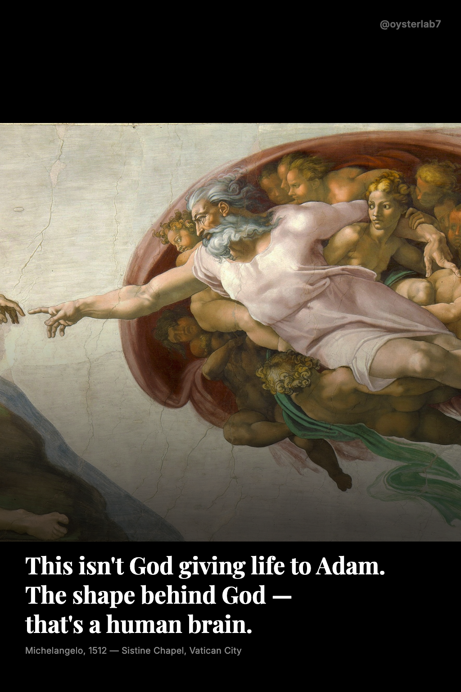
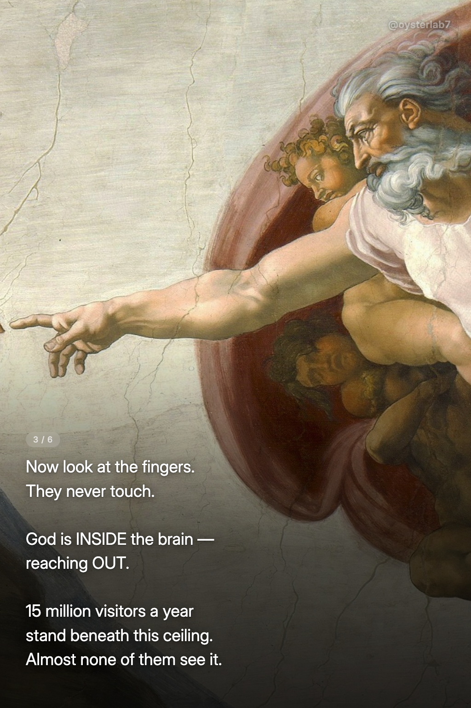
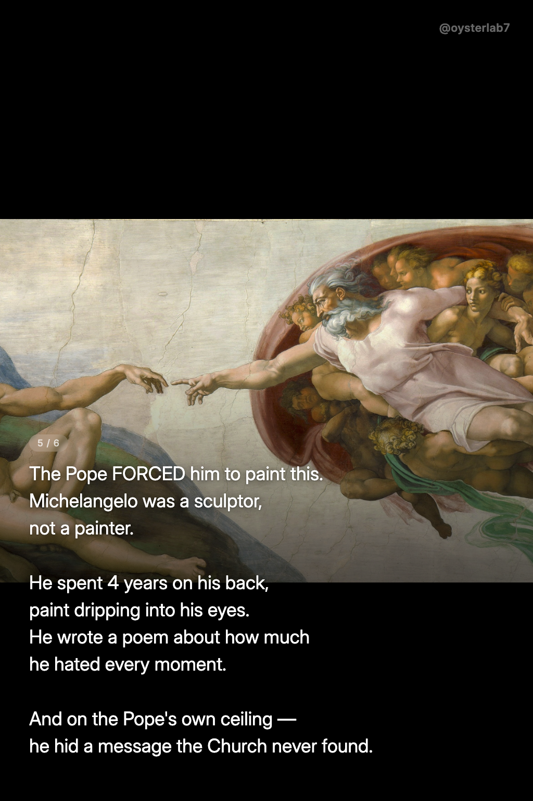
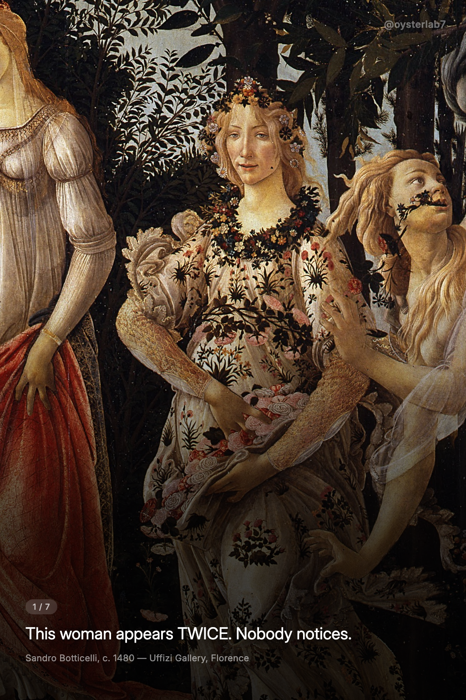
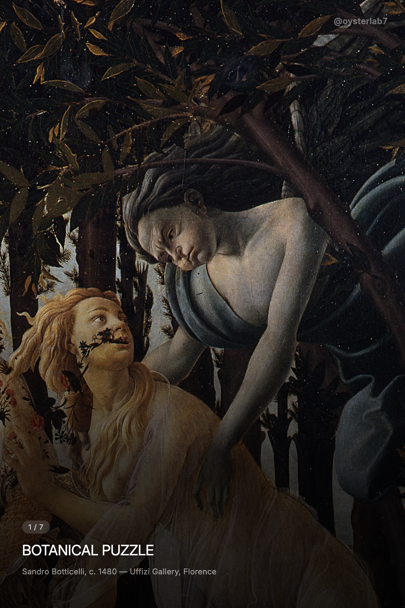
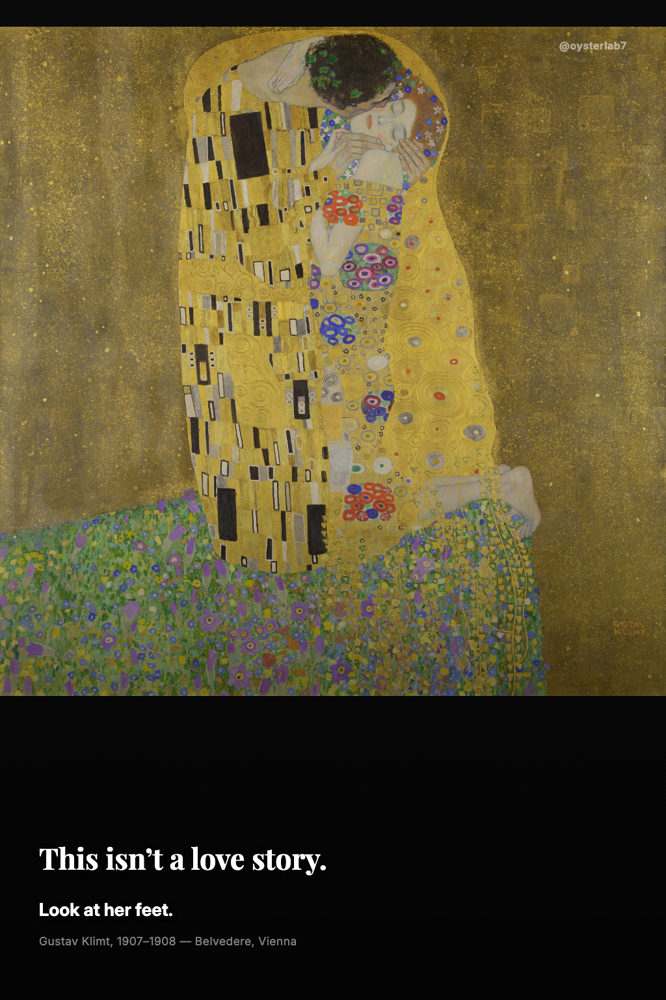
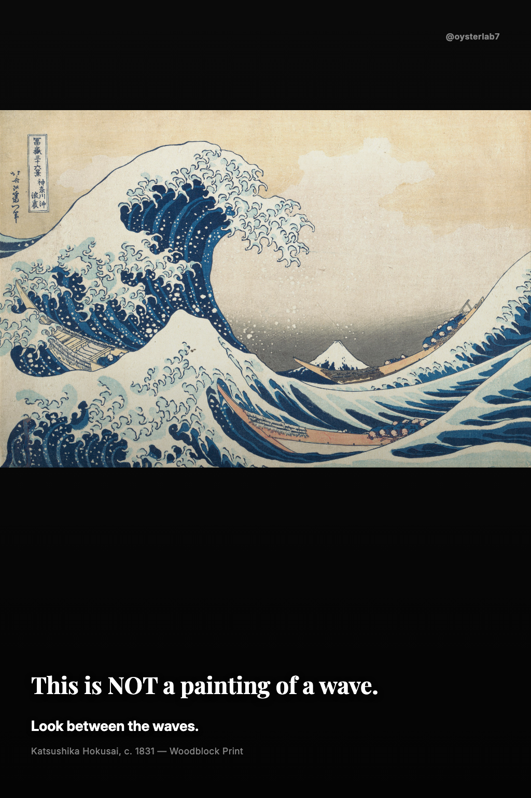
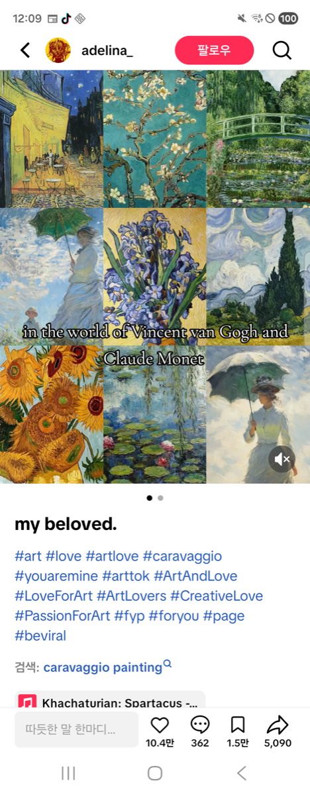
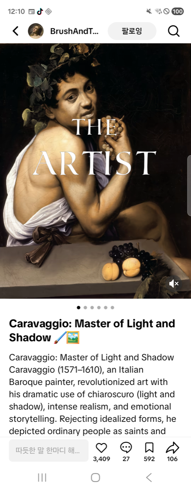

AI가 매일 콘텐츠를 만들고, 올리고, 결과를 측정하고,
오늘보다 내일은 더 나은 결과물을 만듭니다.
보티첼리의 프리마베라에 숨겨진 여자,
미켈란젤로가 교황의 천장에 몰래 그린 뇌.
AI가 이야기를 기획하고, 슬라이드를 만들고,
틱톡에 올리고, 결과를 측정합니다.
문제는 — 뭐가 사람의 손을 멈추게 하는지
아무도 모른다는 겁니다. 그래서 매일 실험합니다.



6개의 신호를 3단계로 묶어 측정합니다.
끝까지 봤는가가 모든 것의 전제 조건이에요.
끝까지 안 보면 공유도 저장도 댓글도 없습니다.
Completion → Shares → Saves 순서로 중요합니다.
상위 3개가 전체의 60%를 차지해요.
초기 시스템은 단순했어요.
명화를 고르고, 슬라이드를 만들고, 올린다.
매일 올렸지만 결과를 제대로 수집하지 못했습니다.
같은 실수가 반복됐어요.
"텍스트 없는 갤러리" — 7사이클 연속 탈락.
각 단계가 독립된 세션이라
어제의 실패를 오늘이 모릅니다.
Daily Average Score
구체적인 훅이 모호한 훅보다 10배.
"TWICE"는 궁금해서 넘기고, "PUZZLE"은 뭔지 몰라서 지나갑니다.


A는 94.7%가 추천 피드에서 봤어요.
하지만 slide 3에서 답이 나와버렸습니다.
궁금증이 풀리면 넘길 이유가 없어요.
반면 역대 최고 점수를 기록한 포스트는
궁금증이 풀릴 때마다 새로운 궁금증이 생기는 구조였습니다.
하나의 답이 다음 질문을 만들어서, 끝까지 넘기게 됩니다.
답은 뒤로 미뤄야 한다.
구조가 completion을 결정합니다.
Slide별 이탈 — primavera_a
4월 초, 10사이클 동안 단 하나도 통과하지 못했습니다.
문제는 콘텐츠가 아니라 프로세스였습니다.
좋은 인사이트를 발견해도 다음 사이클에 반영되지 않았어요.
각 에이전트가 독립 세션이라 이전 세션의 맥락을 전혀 모릅니다.
파일만이 유일한 소통 수단인데, 그 파일을 안 읽거나 무시했습니다.
교훈 1
측정하지 않으면 배울 수 없다
→ 성과를 수집하고 슬라이드를 직접 보는 분석 단계 추가
교훈 2
기억하지 못하면 같은 실수를 반복한다
→ 검증된 인사이트만 모아두는 Playbook 도입. 모든 에이전트가 매번 읽음
교훈 3
"읽어라"는 지시는 무시될 수 있다
→ 읽은 결과를 양식에 채우게 하고, 비어 있으면 다음 단계에서 자동 거부
Before — 초기 프로세스
설계
제작
검수
업로드
성과 측정 없음. 기억 없음. 매일 리셋.
After — 현재 프로세스
분석
스카우트
설계
제작 ↔ 검수
업로드
구조를 고친 직후
10사이클 만에 첫 QA 통과
Before
인사이트가 로그에 묻힘
다음 사이클이 안 읽음
같은 실수 7회 반복
After
검증된 사실만 Playbook에 보존
매 사이클 시작 시 전원 필독
읽은 증거 없으면 자동 거부
매일 쌓이는 로그는 금방 묻힙니다.
Playbook은 데이터로 확인된 사실만 남깁니다.
추측은 기록하지 않습니다. 포스트 ID와 수치가 있어야 합니다.
"This woman appears TWICE" → 347뷰, FYP 94.7%
"BOTANICAL PUZZLE" → 34뷰, FYP 47.5%
같은 그림, 같은 날, 첫 문장만 다름
하나의 답이 다음 질문을 만드는 구조 → score 59.9
slide 3에서 답이 나오는 구조 → score 17.7
FYP가 높아도 구조가 나쁘면 점수가 낮음


7장 중 4장이 같은 구도 → completion 2.8%
텍스트 없는 포맷 → 7사이클 연속 탈락
이 패턴에 해당하면 자동 거부
각 에이전트는 독립된 AI 세션입니다. Playbook과 파일만으로 소통합니다.
어제 올린 포스트의 성과를 측정하고
슬라이드를 직접 한 장씩 보면서
어디서 사람들이 떠났는지 진단합니다.
→ Playbook 업데이트
실제 안드로이드 폰을 원격 조종해서
틱톡을 탐색합니다. 지금 뜨는
명화 콘텐츠 Top 3를 찾아 분석합니다.


→ 성공 전략 분석
스카우트 결과 + Playbook을 보고
A/B/C 포스트 3개를 설계합니다.
Playbook 증거 양식을 채워야 합니다.
훅: 구체적 미스터리 / 답 공개: slide 5 / CTA: 구체적 질문
설계를 받아 슬라이드 7장을 렌더링합니다. 과거 실수 목록을 사전 점검합니다.
슬라이드를 한 장씩 직접 보고 판정합니다. 시선, 구도, 텍스트-이미지 일치, 스토리 구조를 확인합니다.
탈락 시 구체적 수정 지시 → Maya가 고쳐서 재제출
통과한 포스트를 안드로이드 폰을
자동 조종해서 틱톡에 게시합니다.
KST 새벽 3시
= 유럽 저녁 7시 + 미국 오후 1시
스카우트가 찾은 1등 포스트를
따라 만듭니다. 같은 작품, 같은 전략.
스카우트 Top 1의
전략을 그대로
같은 그림에 Playbook에서
검증된 전략을 적용합니다.
A와 직접 비교해서
내부 전략 검증
새로운 그림에
Playbook 전략을 적용합니다.
전략의 일반화를
확인
매 사이클의 A/B/C 결과가 Playbook에 쌓이고 다음 설계에 반영됩니다.
구체적 훅이 모호한 훅보다 10배 강하다
답을 일찍 주면 사람들이 slide 3에서 떠난다
반전이 겹겹이 쌓이는 구조가 가장 오래 붙잡는다
AI는 같은 실수를 반복한다 — 구조로 막아야 한다
가장 큰 병목
Completion Rate — 최고 28%, 벤치마크 70%
다음 검증
다단 반전 구조를 A/B/C로 체계 적용 → 완주율 40%+
Best Records
post_026 — 다단 반전 구조
primavera_a — 구체적 훅
벤치마크 70% 대비 40% 수준
아직 바이럴을 만들지 못했습니다.
하지만 바이럴을 만들지 못하는 이유를
점점 정확하게 알아가고 있습니다.